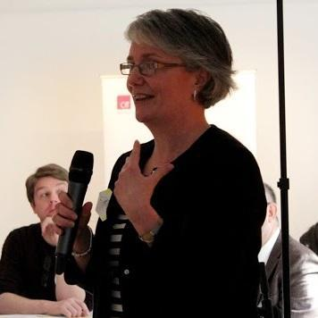

ORGANIZING COMMITTEE
Co-Chairs

Oonagh O'Brien is a Lecturer in Object Oriented Programming and Development, Web development technologies, Software Engineering, Project Management at CIT and Consultant Project Manager with PMP certification.
Oonagh.Obrien@cit.ie

Catherine Murphy is a BIS Programme Work Placement Manager and Lecturer in CIT. She previously worked as a Senior Business Analyst and IT Project Manager with AIB. She has extensive lecturing experience with CIT, UCC, Griffith college and CIMA as well as a range European guest lecturing. She was Head of Department for Accounting and Information Systems for 3 years. She has lead out TEDxCIT, CIT's APPrentice project as well as European funded projects CoderDojo Erasmus plus and Smart Rural. She loves a new challenge and has recently commenced a Masters in Teaching and Learning.
Catherine.Murphy@cit.ie

Ramona Marfievici is a senior researcher at the Nimbus Research Centre in CIT. Her research interests are in the area of wireless sensor networks and cyber-physical systems.
Ramona is part of the Athena Swan team in CIT promoting gender equality and inclusion. She enjoys ice/inline skating and hiking, listens to rock music and she's a non-professional chocolate taster.
Ramona.Marfievici@cit.ie
For further press information, images etc., please contact Emily.Twomey@cit.ie or Tel. +353 87 2247132.